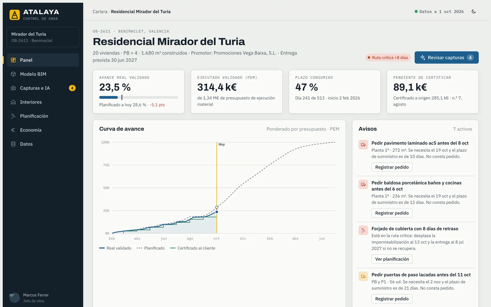

Software para la gestión de obras
Software a medida para gestionar obras
Desarrollamos las herramientas con las que constructoras y promotoras controlan el plazo, el coste y la calidad de sus obras. Partimos de cómo trabaja cada empresa, no de un programa genérico.
Desde 2011Constructoras, promotoras e instaladorasValencia · Madrid

Somos ingenieros de obra y desarrolladores. Sabemos cómo se gestiona una obra porque lo hemos hecho, y construimos el software que cada empresa necesita para hacerlo mejor.
Cimbra nació en 2011 de un grupo de ingenieros cansados de controlar obras de millones de euros con hojas de cálculo. Desde entonces hacemos una sola cosa: software para gestionar obras.
Trabajamos con constructoras de edificación y obra civil, promotoras e instaladoras. Equipos que llevan entre cinco y cincuenta obras a la vez y necesitan ver todas con el mismo criterio.
No vendemos licencias de un programa cerrado. Analizamos cómo trabaja tu empresa, desarrollamos lo que falta, lo conectamos con lo que ya usas y lo implantamos en obra. El código y los datos son tuyos.
años desarrollando software solo para la construcción
constructoras, promotoras e instaladoras clientes
obras gestionadas con nuestro software
ingenieros de obra y desarrolladores en el equipo
Seis fases. En cada una sabemos dónde se pierde el control
Gestionar una obra es encajar plazo, coste, calidad, subcontratas y propiedad con información que llega tarde y repartida. Conocemos cada fase por dentro y sabemos qué puede resolver un software en cada una.
- 01
Estudio y contrato
El coste objetivo vive en un Excel aparte del presupuesto. Lo generamos partida a partida desde el BC3 de venta y entregamos a la obra los supuestos de la oferta.
- 02
Implantación y planificación
El Gantt se aprueba y no se vuelve a actualizar. Separamos plan aprobado y previsión, con fechas límite de contratación y de pedido calculadas desde el plazo de suministro.
- 03
Contratación y compras
Los comparativos no comparan lo mismo. Homogeneizamos las ofertas contra el coste objetivo y generamos contratos, pedidos y control documental de cada subcontrata.
- 04
Ejecución y seguimiento
El avance se estima a ojo a final de mes. Lo medimos por partida, zona y etapa, con evidencias, y trazamos órdenes de cambio y contradictorios hasta su certificación.
- 05
Certificación y coste
La certificación se reconstruye cada mes en Excel. La generamos a origen desde lo validado, conciliamos facturas de subcontratas y cerramos el coste-venta mensual.
- 06
Cierre y postventa
Las liquidaciones se alargan meses. Liquidamos con todo el histórico del contrato, generamos la documentación final y gestionamos la postventa por vivienda.
Tres formas de trabajar con nosotros
Según de dónde partas: una necesidad concreta que nadie resuelve, un proceso habitual que ya tenemos cubierto, o varios sistemas que no se hablan.
Software a medida
Diseñamos y desarrollamos la herramienta que tu empresa necesita para una parte concreta de la obra: partes diarios, control documental, certificaciones, postventa o lo que no encaje en ningún programa.
Ver solucionesProductos propios
Dos bases probadas para los procesos más habituales: Atalaya, para el control de obra y la certificación, y Cota, para estudios, contratación y coste. Se adaptan a cada empresa.
Ver productosIntegración y acompañamiento
Conectamos Presto, MS Project, el modelo BIM y tu ERP para que nada se escriba dos veces. Implantamos en una obra piloto y damos soporte en horario de obra.
Cómo trabajamosDos bases probadas en obra
Lo que se repite en muchas constructoras lo hemos convertido en producto. Son el punto de partida de buena parte de nuestros proyectos: parte del trabajo ya está hecho y el resto se hace a tu medida.
Atalaya
Control de obraEl avance real de la obra, validado con evidencias de campo y, si existe, el modelo BIM. Planificación que se recalcula con el avance, avisos de pedido y certificación generada desde lo medido.
Conocer Atalaya
Cota
Contratación y costeDel BC3 de venta al margen real de cada obra: coste objetivo por paquete, comparativos de ofertas homogeneizados, contratos y pedidos, y coste-venta mensual con previsión a fin de obra.
Conocer CotaEmpezamos en la obra, no en la pantalla
Cada proyecto sigue el mismo camino. Cada etapa termina con algo que se puede comprobar y, si no se cumple, no se pasa a la siguiente.
Conocer tu obra
Visitamos obras y oficinas, hablamos con cada perfil y revisamos vuestros datos reales.
Diseñar contigo
Procesos, reglas de cálculo y pantallas, validadas con un prototipo que el equipo de obra puede tocar.
Desarrollar e integrar
Entregas cada dos semanas, conectadas con Presto, MS Project y vuestro ERP.
Implantar y acompañar
Una obra piloto en paralelo al control actual hasta que los números cuadran. Después, despliegue y soporte.
Una constructora no necesita más software. Necesita que el que tiene diga lo mismo que la obra, el día que pasa y no a final de mes.Socio fundador de Cimbra
Hablemos de tu obra
Una llamada de treinta minutos con un ingeniero, no con un comercial. Nos cuentas cómo controláis hoy plazo, coste y calidad, y te decimos con franqueza por dónde empezar.
46000 Valencia
28000 Madrid